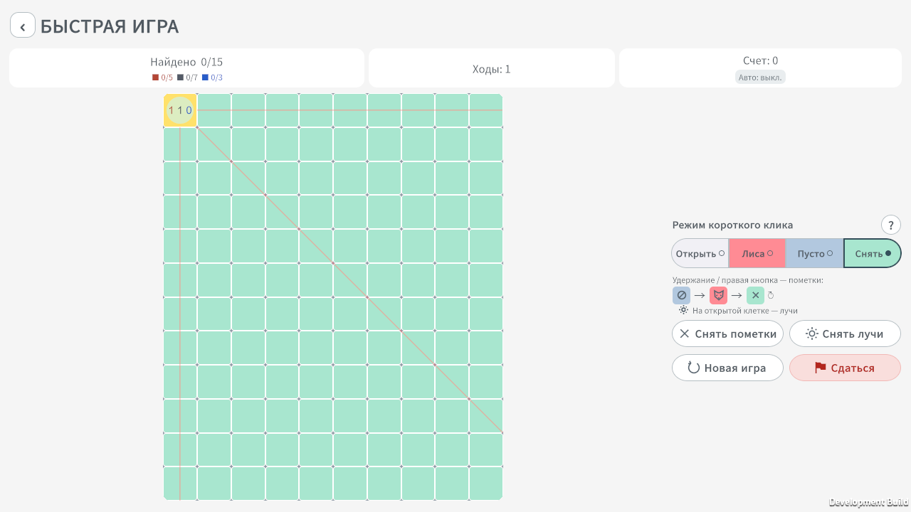

ЛОГИЧЕСКАЯ ГОЛОВОЛОМКА
Где же
спрятались лисы?
У каждой клетки есть подсказка.
У каждой лисы — своё укрытие.
Соедините факты и найдите их всех.
Бесплатно · без установки
Первая загрузка — около 31 МБ

КАК ИГРАТЬ
Смотрите дальше
соседних клеток.
Откройте клетку: число покажет, сколько ещё не найденных лис видно по строке, столбцу и диагоналям — в восьми направлениях.
Сопоставляйте подсказки, ставьте пометки и используйте прожекторы. Когда вы находите лису, числа на поле меняются.
Начните с быстрой игры или проходите задания. Правила, настройки и выбор языка доступны внутри игры.
ОТ ПРОСТОГО К НЕОЖИДАННОМУ
Логика с характером.
Зеркала меняют направление лучей, а камни и лес влияют на обзор. Лисы бывают цветными и прячутся целыми семьями.
Попробуйте разные условия и найдите свой способ читать поле.
Начать игру
Мышь или касание. Интерфейс подстраивается под размер экрана. На небольшом экране попробуйте горизонтальное положение.
Прогресс в этом браузере. Продолжайте игру на том же устройстве. Очистка данных сайта или приватный режим могут удалить сохранения.